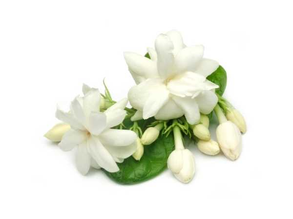

Jasminum sambac
Common Names: Arabian Jasmine, Mogra, Sampaguita
Local Name: Mullai / Malligai (Tamil), Mogra (Hindi), Malli (Malayalam)
Family: Oleaceae
Origin: South and Southeast Asia
Plant Type: Evergreen shrub or vine
Variety: Single Mogra, Double Mogra (Motia), Grand Duke of Tuscany
Average Lifespan: 10–15 years (with proper care, can live longer)
| Growth Habit | Scrambling shrub or vine; can be trained as bush or climber |
| Plant Size | 0.5–3 meters tall (depending on training) |
| Leaves | Opposite, simple, ovate, 4–12 cm long, glossy dark green |
| Flowers | White, waxy, 2–3 cm diameter; single or double forms |
| Flower Characteristics | Intensely fragrant, especially at night; opens in evening, lasts 1–2 days |
| Fruit | Small black berries (rarely produced in cultivation) |
| Fruit Color | Black when ripe |
| Seed Characteristics | Rarely sets seed in cultivation |
| Root System | Fibrous, moderately deep root system |
| Climate | Tropical to subtropical; warm and humid preferred |
| Temperature Range | 20–35°C ideal; sensitive to frost |
| Rainfall Requirement | 800–1200 mm annually; tolerates some drought |
| Soil Type | Well-drained, fertile loamy soil rich in organic matter |
| Soil pH Preference | 6.0–7.5 |
| Sun Requirement | Full sun to partial shade (4–6 hours minimum) |
| Spacing | 1–1.5 meters between plants |
| Irrigation Method | Drip or basin irrigation; consistent moisture during flowering |
| Water Requirement | Moderate; keep soil moist but not waterlogged |
| Can it Grow in Pots? | Yes, excellent pot plant in 10–15 liter containers |
| Fertilizer Schedule | Monthly during growing/flowering season; reduce in winter |
| Recommended Organic Fertilizers | Vermicompost, cow dung manure, bone meal, seaweed extract |
| Pesticide Frequency | Monitor weekly; treat as needed |
| Recommended Organic Pesticides | Neem oil, soap spray for mealybugs and whiteflies |
| Mulching Practice | Organic mulch to retain moisture and suppress weeds |
| Training System | Bush form with regular pruning; or trellis for climbing varieties |
| Pruning Time | December–January (after main flowering season ends) |
| How to Prune | Cut back to 30–50 cm; remove weak and crossing branches; promotes new flowering wood |
| Common Pests | Mealybugs, whiteflies, bud worm, leaf webber, red spider mites |
| Common Diseases | Leaf blight, rust, root rot, sooty mold |
| Disease Prevention & Remedies | Good air circulation, avoid overhead watering, copper fungicide, remove infected parts |
| Flowering Months | April–November (peak: June–September in South India) |
| Fruiting Season | Rarely fruits in cultivation |
| Days to Harvest | Flowers picked daily in early morning when buds are tight |
| Harvest Indicators | Buds fully formed but not yet open; maximum fragrance at this stage |
| Average Yield per Plant | 0.5–2 kg of flowers per plant per season |
| Pollination Type | Self-pollination and insect pollination |
| Pollination Notes | Moths and night-flying insects are primary pollinators due to evening blooming |
| Pollination Details | Primarily moth-pollinated; fragrance intensifies at night to attract pollinators |
| Propagation by Seeds | Rarely used; seeds are uncommon in cultivation |
| Propagation by Cuttings | Semi-hardwood cuttings (10–15 cm) during monsoon; root in 4–6 weeks with rooting hormone |
| Propagation by Grafting | Air layering (gooti) is common and effective; produces flowering plants quickly |
| Water Usage | Moderate; efficient with mulching and drip irrigation |
| Soil Conservation Practices | Dense growth habit prevents soil erosion; good ground cover |
| Organic Practices Used | Panchagavya, jeevamrutha, composting |
| Companion Plants | Marigold (pest deterrent), curry leaf, tulsi |
| Biodiversity Benefits | Attracts moths, butterflies, and beneficial insects; night-blooming supports nocturnal pollinators |
| Commercial Production Regions | Tamil Nadu (Madurai), Karnataka, Andhra Pradesh, West Bengal |
| Market Uses | Garlands, hair adornment, religious offerings, jasmine tea |
| Processing Uses | Jasmine oil (absolute), jasmine concrete, perfumery, jasmine tea |
| Market Value (Approx.) | ₹200–2000 per kg (varies hugely by season and demand) |
| Symbolism | National flower of the Philippines (Sampaguita); symbol of purity, love, and motherhood in South Asia |
| Traditional Uses | Essential in South Indian weddings and temple worship; women wear jasmine in hair daily; used in Ayurveda |
| Calories | Not consumed as food directly |
| Dietary Fiber | N/A |
| Vitamin C | N/A |
| Vitamin A | N/A |
| Iron | N/A |
| Potassium | N/A |
| Antioxidants | Jasmine essential oil contains linalool, benzyl acetate with antioxidant properties |
| Other Key Nutrients | Used in jasmine tea which provides tea polyphenols |
| Anxiety & Sleep | Jasmine aroma is a natural relaxant; used in aromatherapy for stress relief and better sleep |
| Immune Support | Jasmine tea provides antioxidants that support immune function |
| Anti-inflammatory Properties | Jasmine oil has anti-inflammatory and antiseptic properties |
| Heart Health | Jasmine tea may help lower cholesterol and improve circulation |
| Digestive Health | Jasmine tea aids digestion; flower paste used traditionally for mouth ulcers |
Disclaimer: Information provided is for educational purposes only and not a substitute for medical advice.
Add your field observations here.